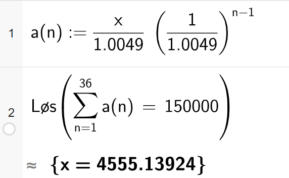
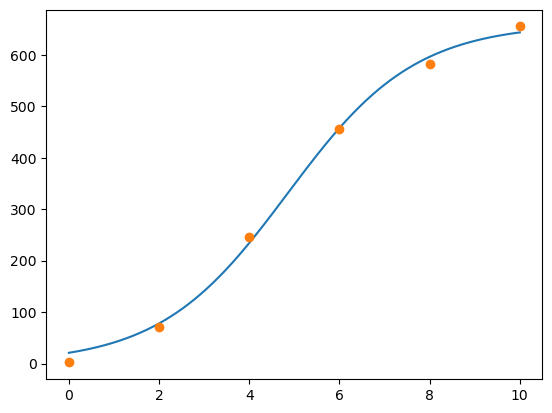
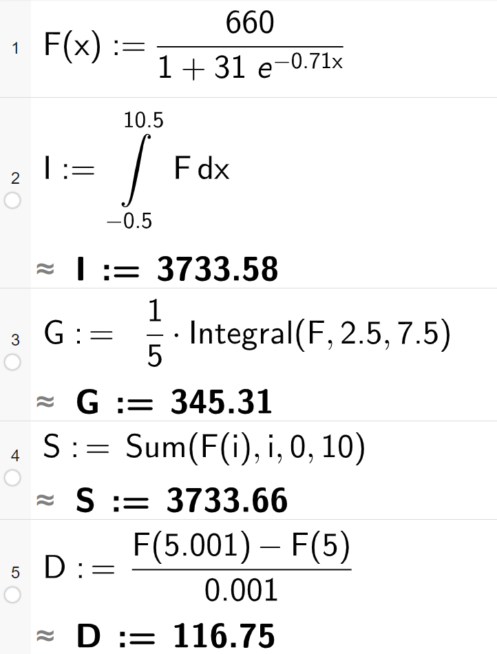
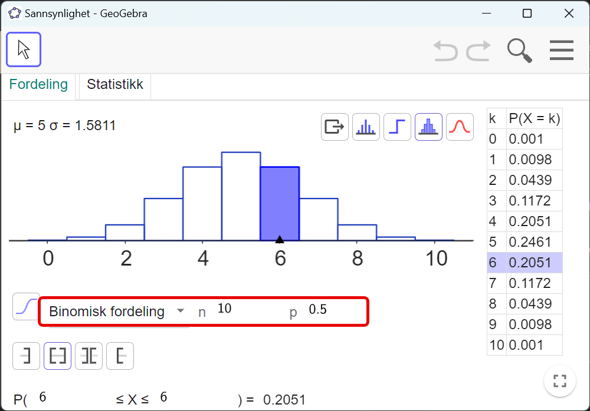

Løysingsforslag eksamen S2 - V23
Her er eit forslag til løysing av våreksamen i S2 2023. I del 2 er oppgåvene stort sett Python brukt som hjelpemiddel.
Eg kan ikkje lova at løysinga er feilfri… 😊 Gje meg gjerne ein lyd i kommentarfeltet eller her om du ser feil 🔍
Sist oppdatert: 29.04.2024
Eksamenssettet finn du hos UDIR: Finn eksamensoppgaver
Del 1 - utan hjelpemiddel
Oppgåve 1 - bestemt integral
Rekn ut integralet
\[ \begin{align*} \int_0^1 \left(e^x + 3x^2 \right) dx &= \left[ e^x + x^3 \right]_0^1 \\ &= \left( e^1 + 1^3 \right) - \left(e^0 - 0^3\right) \\ &= e + 1 - (1-0) = e + 1 - 1 \\ &= e \end{align*} \]
Oppgåve 2 - kostnads- og inntektsfunksjon
Bruker figuren frå oppgåvesettet med inntekst- og kostnadsfunksjonane sine respektive grafar
a) - grensekostnad
Grensekostnaden når det blir produsert 40 einingar er eit omtrentleg mål på kor mykje meir det vil kosta oss å produsera ei eining til (dvs. 41). Grensekostnaden finn me ved å sjå på den deriverte til kostnadsfunksjonen. For å finna den frå grafen kan me teikna ein tangent til kostnadsfunksjonen som tangerer når \(x=40\). Deretter finn me stigningstalet til denne tangenten.
Den aktuelle tangenten vil gå gjennom tangeringspunktet \((40, 3000)\) og punktet \((80, 6000)\).
Dermed er grensekostnaden når det blir produsert 40 einingar: \[ K'(40) \approx \frac{\Delta y}{\Delta x} = \frac{6000-3000}{80-40} = \frac{3000}{40} = 75 \]
b) - størst overskot
Overskotet er størst der overskotsfunksjonen har sitt ekstremalpunkt.
Overskotssfunksjonen finn me ved å trekka kostnadene frå inntektene. Dermed har me at \[ \begin{align*} O(x) &= I(x) - K(x) \\ O'(x) &= I'(x) - K'(x) \end{align*} \]
Som betyr at \[O'(x) = 0 \Leftrightarrow I'(x) = K'(x)\]
Me kan altså sjå på grafen kva \(x\)-verdi som gjer at tangenten til inntektsfunksjonen og tangenten til kostnadsfunksjonen har samme stigningstal.
I dette tilfellet ser det ut til å vera for \(x\approx 55\), dvs. 55 einingar.
Oppgåve 3
a) totalt sannsyn
Det totale sannsynet, summen av sannsyna i sannsynsfordelinga, må vera 1. Dermed har me at
\[\begin{align*} k + 0.3 + (k-0.2) + 0.1 &= 1 \\ 2k + 0.2 &= 1 \\ 2k &= 0.8 \\ k &= 0.4 \end{align*}\]
Og då blir \[\begin{align*} P(X>1) &= P(X=2)+P(X=3) \\ &=(k-0.2) + 0,1 \\ &= (0,4-0.2)+0.1 \\ &= 0.3 \end{align*} \]
b) - forventningsverdi og varians
Skriv om tabellen med \(k=0.4\)
| \(x\) | \(P(X=x)\) |
|---|---|
| 0 | 0.4 |
| 1 | 0.3 |
| 2 | 0.2 |
| 3 | 0.1 |
Forventningsverdi, E(X)
Veit at
\[E(X) = \sum x_i \cdot P(X=x_i)\]
Bruker dette og finn forvetningsverdien:
\[\begin{align*} E(X) &= \sum x_i \cdot P(X=x_i) \\ &= 0\cdot 0.4 + 1 \cdot 0.3 + 2 \cdot 0.2 + 3 \cdot 0.1 \\ &= 0 + 0.3 + 0.4 + 0.3 \\ &= 1 \end{align*}\]
Varians, Var(X)
Veit no at \(\mu = E(X) = 1\). Variansen er det gjennomsnittlege kvadratavviket mellom observasjonane og \(\mu\). Dermed er
\[\begin{align*} Var(X) &= \sum (x_i-\mu)^2\cdot P(X=x_i) \\ &= (0-1)^2\cdot 0.4 + (1-1)^2 \cdot 0.3 + (2-1)^2 \cdot 0.2 + (3-1)^2 \cdot 0.1 \\ &= 1\cdot 0.4 + 0\cdot 0.3 + 1\cdot 0.2 + 4\cdot 0.1 \\ &= 0.4 + 0.2 + 0.4 \\ &= 1 \end{align*}\]
Dermed har me funne at \(E(X)=Var(X)=1\)
Oppgåve 4
a) - forklar koden
I forløkka ser me at storleikane S og a vert endra N gongar.
a vert lagt til S medan d vert lagt til a.
Først i programmet definerer ein a=3 og d=4. Me ser òg at S=0.
Desse opplysningane kombinert samsvarar godt med aritmetiske følger og summen av dei.
Eleven her vil altså rekne ut summen av ei aritmetisk følge der \(a_1 = 3\) og differansen mellom ledda er 4. N=10 betyr at eleven finn summen av dei 10 første ledda av denne følga.
b) - resultat når N=100
Ut frå forklaringa i (a) vil dette seie at programmet reknar ut summen av dei 100 første ledda i \(a_n = 3 + (n-1)4 = 4n - 1\)
For å finna summen av dei 100 første ledda treng me \(a_1\) og \(a_{100}\). Bruker den eksplisitte formelen.
\[\begin{align*} a_1 &= 4\cdot 1 - 1 = 3 \\ a_{100} &= 4\cdot 100 - 1 = 399 \end{align*}\]
\[\begin{align*} S_{100} &= \frac{a_1 + a_{100}}{2} \cdot 100 \\ &= \frac{3 + 399}{2} \cdot 100 \\ &= 201\cdot 100 \\ &= 20100 \end{align*}\]
Når me endrar til N=100 i linje fire skriv programmet ut 20100.
Oppgåve 5
Ser om me finn eit system her.
- Dag 1: 7 mg i kroppen
- Dag 2: 7 mg + \(0.9 \cdot 7\) mg i kroppen (ny tabelett + 90% av tab. dagen før)
- Dag 3: 7 mg + \(0.9 \cdot 7\) mg + \(0.9(0.9 \cdot 7)\) mg i kroppen.
Ser at dette dannar ei geometrisk rekke med \(a_1 = 7\) og \(k=0.9\).
Sidan \(-1<k<1\) er den uendelege geometriske rekka konvergent, og me kan finna ein sum:
\[\begin{align*} S &= \frac{a_1}{1-k} \\ &= \frac{7}{1-0.9} \\ &= \frac{7}{0.1} \\ &= 70 \end{align*}\]
Om Knut tar ein tablett kvar dag til evig tid vil han aldri overstiga 70 mg verkestoff i kroppen. Legen har rett.
oppgåve 6
a) finn sannsynet
Får oppgitt at \(\mu = 500\) og \(\sigma = 50\).
Vil finna \(P(X > 600)\). Gjer om til standard normalfordeling, slik at me kan nytta tabellen i vedlegget.
\[z = \frac{x-\mu}{\sigma} = \frac{600-500}{50} = 2 \]
Dermed veit me at \[P(X>600) = P(Z > 2)\]
Les av tabellen og ser at \(P(Z\leq 2) = 0.9772\)
Dermed er \(P(Z>2)=1-P(Z\leq2)=1-0.9772 = 0.0228\)
Altså er \(P(X > 600) = 0.0228\)
b) bestem t
Får oppgitt at \(P(X > t) = 0.758\). Det vil seie at \(P(Z\leq z) = 1 - 0.758 = 0.242\)
Vil finna ein \(z\) som tilfredsstiller dette. Ser i tabellen i vedlegget at \(z=-0.7\) er rett verdi.
Går frå standard normalfordeling til vår normalfordeling ved å gå motsett veg enn i oppgåve (a).
\[\begin{align*} z &= \frac{x-\mu}{\sigma} \\ -0.7 &= \frac{x-500}{50} \\ -35 &= x - 500 \\ x &= 465 \end{align*}\]
Dermed må \(t=465\).
Det er 75,8% sannsynleg at eit tilfeldig trekt batteri har levetid på meir enn 465 timar.
c) grafisk framstilling
Sidan \(\mu = 500\) må toppunktet til grafen vera i \(x=500\). Dette ekskluderer B og C.
I tillegg veit me at \(\sigma = 50\) betyr at ca. 95% av observasjonane, eller arealet under grafen i denne framstillinga, skal vera mindre enn 2 standardavvik frå forvetningsverdien. Dvs. \(500 \pm 2\cdot 50 = 500 \pm 100\). Dette eksluderer D som har ein større del av arealet sitt utanfor intevallet mellom \(x=400\) og \(x=600\).
Figur A illustrerer \(X\).
Del 2 - med hjelpemiddel
Oppgåve 1
Lån
a) terminbeløp
I eit annuitetslån skal summen av noverdiane av annuitetane (terminbeløpa) vera likt lånebeløpet. Går ut frå at første innbetaling er om ein månad. Om me kallar annuiteten \(x\), vil noverdien av første innbetaling vera \(\frac{x}{1.0049}\), noverdien av andre innbetaling vera \(\frac{x}{1.0049^2}\) osb.
Dette er ei geometrisk rekke med \(a_1 = \frac{x}{1.0049}\) og \(k= \frac{1}{1.0049}\). Summen av dei 36 første ledda skal bli 150000.
Løyser i CAS:

b) dekke restlån?
Lagar eit python-skript for å finne restlånet etter 24 innbetalingar.
restlån = 150000
rentefot = 0.0049
terminbel = 4555.14
N = 24
for i in range(N):
renter = restlån*rentefot
avdrag = terminbel - renter
restlån = restlån - avdrag
print(f"Restlån etter {N} terminar er ca {restlån:.0f} kr")Restlån etter 24 terminar er ca 52960 krDei 55000 kr vil vera nok til å dekka restlånet.
Oppgåve 2
Tabellen viser kor mange millionar kroner brukt på strøyming av musikk i nokre år i perioden 2008 til 2018
| År | Strøyming |
|---|---|
| 2008 | 2 |
| 2010 | 70 |
| 2012 | 246 |
| 2014 | 456 |
| 2016 | 582 |
| 2018 | 655 |
a) Lag ein modell
Me startar med å lage to arrays med \(x\) og \(y\)-verdiar. Sidan \(F(0)\) skal tilsvare talet på strøymingar i 2008 let me \(x\) vera år etter 2008.
Plottar datapunkta for å få ei oversikt over korleis dei ser ut.

Det kan sjå ut som om punkta ligg på ei S-kurve, slak stigning i starten og slutten, med bratt stigning på midten. Prøver difor å laga ein logistisk modell.
Ein logistisk funksjon er gitt på forma \[ f(x) = \frac{B}{1+a\cdot e^{-k\cdot x}}\]
x_verdiar = np.linspace(0, 10, 1000)
# gjetter ca koeffverdi
gjett = [650, 25, 1]
# finn funksjonen
K, E = curve_fit(F, x, y, p0=gjett)
# hentar ut koeff.
B, a, k = K
# rekna ut y-verdiar
y_verdiar = F(x_verdiar, B, a, k)
# plottar grafen
plt.plot(x_verdiar, y_verdiar)
plt.plot(x, y, "o")
plt.show()
b) Bestemme verdiar
Bestem \(I\), \(G\), \(S\) og \(D\):
\[ \begin{align*} I &= \int_{-0.5}^{10.5} F(x) dx \\ G &= \frac{1}{5} \int_{2.5}^{7.5} F(x) dx \\ S &= \sum_{i=0}^{10} F(i) \\ D &= \frac{F(5.001) - F(5)}{0.001} \end{align*} \]
Bruker CAS: Sjå radene i skjermbiletet for verdiane til \(I\), \(G\), \(S\) og \(D\)

c) Praktisk tolking
At \(I\approx 3734\) betyr at det har blitt strøyma om lag 3734 millionar songar i perioden 2008 til 2018. Reknar med at 2008 er mellom \(x=-0.5\) og \(x=0.5\) og 2018 er mellom \(x=9.5\) og \(x=10.5\).
At \(G\approx 345\) betyr at det har blitt strøyma om lag 345 millionar songar i gjennomsnitt per år i perioden 2010 til 2015.
At \(S\approx 3734\) betyr at det har blitt strøyma om lag 3734 millionar songar i perioden 2008 til 2018. Forskjellen på \(I\) og \(G\) er at \(I\) reknar med \(F(x)\) som ein kontinuerleg funksjon, medan \(S\) reknar med diskrete verdiar (år for år).
At \(D\approx 117\) betyr at vekstfarten (den deriverte) når \(x=5\) er 117 millionar songar per år. Altså kan ein tenka at det vil bli strøyma 117 millionar fleire songar i 2014 enn i 2013. (\(x=5\) svarar til 2013)
Oppgåve 3
Blindtest av Coca-Cola og Pepsi-Cola.
a) Berre tipping
\(X\) er rette svar når ho smakar på 10 glas. Dermed er
\[X = X_1+X_2+\ldots+X_{10}\]
Dersom Marte berre skal tippa på dei ti glasa kan me gå ut frå at \(P(X_i) = 0.5\) for alle \(i\). Dvs. at det er 50% sjanse for at ho tippar rett på kvart glas.
Me skal finna \(P(X=6)\). Dette er binomisk sannsyn viss me går ut frå at
- resultatet av tippinga på kvart glas er uavhengig av kva ho har tippa på tidlegare
- sannsynet for å tippa rett er konstant for kvart glas (\(p=0.5\))
- det er berre to utfall, rett eller feil
Løyser i Python med NumPy.
import numpy as np
rng = np.random.default_rng()
# tal simuleringar
N = 100000
# tal glas
n = 10
# sannsynet for å tippa rett
p = 0.5
# simulerer
x = rng.binomial(n, p, N)
# tel opp
gunstige = np.sum(x == 6)
# finn og skriv ut sannsynet
sannsyn = gunstige / N
print(f"Sannsynet for å tippa 6 rett er ca {sannsyn:.4f}")Sannsynet for å tippa 6 rett er ca 0.2031Bruker sannsynskalkulatoren i GeoGebra. Legg inn n=10 og p=0.5.
Les av tabellen at sannsynet for å tippa rett på 6 glas er 0.2051.

b) Hypotesetesting
Marte svarar rett på 8 av 10 når ho gjer så godt ho kan.
Me skal avgjera ved hypotesetesting om det er grunnlag for å seie at Marte kan kjenna att dei to Colatypane med eit signifikansnivå på 5%.
Nullhypotesa er at Marte ikkje kan skilja mellom dei to, dvs. \(p=0.5\). Alternativhypotesa er at ho kan skilja mellom dei to, dvs. \(p>0.5\). Dermed får me \[ \begin{align*} H_0 &: p=0.5 \\ H_1 &: p>0.5 \end{align*}\]
Dermed må me sjekka om \(P(X\geq 8)\) er mindre enn 0.05. Gjer dette med simulering på same måte som i oppgåve (a).
import numpy as np
rng = np.random.default_rng()
# tal simuleringar
N = 100000
# tal glas
n = 10
# sannsynet for å tippa rett
p = 0.5
# simulerer
x = rng.binomial(n, p, N)
# tel opp
gunstige = np.sum(x >= 8)
# finn og skriv ut sannsynet
sannsyn = gunstige / N
print(f"Sannsynet for å tippa 8 eller fleire rett er ca {sannsyn:.4f}")Sannsynet for å tippa 8 eller fleire rett er ca 0.0556Sidan svaret her er større enn 0.05 kan me ikkje forkasta nullhypotesa. Me kan altså ikkje slå fast at Marte ikkje berre tippar tilfeldig.
c) overbevise Birger
Birger syns 10 glas er lite og vil auka til 30 glas. Kor mange rette må Marte svara for at Birger skal bli overbevist om at ho kan skilja mellom dei to Cola-typene med eit signifikansnivå på 5%?
Lagar eit tilsvarande program, men endrar til 30 glas. Lar ei while-løkke sjekka om kor mange rette som trengs for at \(P(X\geq x) < 0.05\).
import numpy as np
rng = np.random.default_rng()
# tal simuleringar
N = 1000000
# tal glas
n = 30
# sannsynet for å tippa rett
p = 0.5
# simulerer
x = rng.binomial(n, p, N)
# variabel for rette. Startar med halvparten.
rette = 15
# og startverdi for sannsynet
gunstige = np.sum(x >= rette)
sannsyn = gunstige / N
# sjekkar kor mange rette som trengs
while sannsyn > 0.05:
rette += 1
gunstige = np.sum(x >= rette)
sannsyn = gunstige / N
print(f"Det trengs minst {rette} rette for at sannsynet \nfor å tippa så mange eller fleire rett er under 0.05")Det trengs minst 20 rette for at sannsynet
for å tippa så mange eller fleire rett er under 0.05Ho må tippa minst 20 av 30 rette for at Birger skal bli overbevist om at ho smakar forskjell.
Oppgåve 4
Tilbod 1: 100 kr første veka. Beløpet \(a_n\) ho får utbetalt i veke \(n\) er gitt ved \[ a_n = a_{n-1} + 10 \]
Tilbod 2: 100 kr første veka. Beløpet \(b_n\) ho får utbetalt i veke \(n\) er gitt ved \[ b_n = b_{n-1}\cdot 1.05 \]
a) dei fire første vekene
Tilbod 1 Lagar python-skript for å finna dei fire første vekene.
def a(n):
if n == 1:
return 100
else:
return a(n-1) + 10
for i in range(1, 5):
print(f"a({i}) = {a(i)}")a(1) = 100
a(2) = 110
a(3) = 120
a(4) = 130Tilbod 2 Lagar python-skript for å finna dei fire første vekene.
b) samalikne vekeløn
Sjekkar kor mange veker det tar før tilbod 2 gir høgare løn enn tilbod 1.
# startar i veke 2 sidan tilboda er like i veke 1
veke = 2
# finn første veke der tilbod 2 er større enn tilbod 1
while b(veke) < a(veke):
veke += 1
print(f"Etter {veke} veker er tilbod 2 > tilbod 1")
print(f"tilbod 1: {a(veke):.2f}")
print(f"tilbod 2: {b(veke):.2f}")Etter 28 veker er tilbod 2 > tilbod 1
tilbod 1: 370.00
tilbod 2: 373.35c) samanlikne totaløn
Gjer tilsvarande som i oppgåve b men finn totalen. Sjekkar kor mange veker det tek før tilbod 2 til saman gjev meir løn enn tilbod 1.
tot_a = a(1) + a(2)
tot_b = b(1) + b(2)
veke = 2
while tot_b < tot_a:
veke += 1
tot_a += a(veke)
tot_b += b(veke)
print(f"Etter {veke} veker er tilbod 2 > tilbod 1")
print(f"tilbod 1: {tot_a:.2f}")
print(f"tilbod 2: {tot_b:.2f}")
Etter 39 veker er tilbod 2 > tilbod 1
tilbod 1: 11310.00
tilbod 2: 11409.50Oppgåve 5
a) simulerer 20 elevar
Programmet skal trekkja ut 20 elevar. For kvar elev dei skal trekkja, trekk dei først ein tilfeldig skule og deretter ein tilfeldig elev frå den skulen.
import numpy as np
rng = np.random.default_rng()
# tal elevar
N = 20
# trekk tilfeldig skule (A->0, B->1, C->2)
skule = rng.integers(0, 3, N)
# tel opp kor mange av kvar skule
A = np.sum(skule == 0)
B = np.sum(skule == 1)
C = np.sum(skule == 2)
# trekk karakterar (elevar)
A_kar = sum(rng.normal(3.8, 1.2, A))
B_kar = sum(rng.normal(3.4, 1.4, B))
C_kar = sum(rng.normal(4.1, 1.1, C))
# snittkarakter
snitt = (A_kar + B_kar + C_kar) / N
print(f"Snittkarakteren er ca {snitt:.2f}")Snittkarakteren er ca 3.37b) finne sannsyn ved simulering
Gjer om koden frå a) til ein funksjon. Køyrer denne simuleringa mange gongar for å finna sannsynet for at snittkarakteren til dei 20 elevane er over 4.
def snitt20elevar():
N = 20
skule = rng.integers(0, 3, N)
A = np.sum(skule == 0)
B = np.sum(skule == 1)
C = np.sum(skule == 2)
A_kar = sum(rng.normal(3.8, 1.2, A))
B_kar = sum(rng.normal(3.4, 1.4, B))
C_kar = sum(rng.normal(4.1, 1.1, C))
snitt = (A_kar + B_kar + C_kar) / N
return snitt
# simulerer 100000 gonger
simlueringar = 100000
# tom liste til karakterar
karakterar = np.array([])
# legg til snittkarakter for 20 elevar i lista 100000 gonger
for i in range(simlueringar):
karakterar = np.append(karakterar, snitt20elevar())
# tel opp kor mange som er over 4
over4 = np.sum(karakterar > 4)
# reknar ut sannsynet
sannsyn = over4 / simlueringar
# skriv ut resultatet
print(f"Sannsynet for at snittkarakteren er over 4 er ca {sannsyn:.2f}")Sannsynet for at snittkarakteren er over 4 er ca 0.21Køyrer koden fleire gongar med same resultat. Sannsynet for at snittkarakteren til dei 20 elevane er over 4 er ca. 0.21.